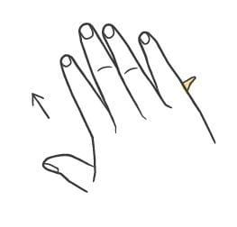
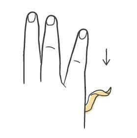
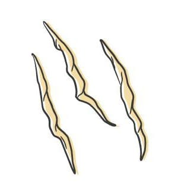

Pasta / Shapes
Trofie
- Dough
- Semolina Dough
- Region
- Liguria, on the eastern Riviera around Recco and Camogli
- Rest
- 1 to 2 hours at room temperature
- Source
- Pasta, Missy Robbins
- Formed
- rolled
Shaping



Method
- Make semolina dough. Line a sheet pan with parchment, then dust the parchment with semolina.
- Set the dough on the work surface under plastic wrap or a towel, left loose so you can pull pieces off as you go.
- Pinch off a piece about the size of a shelled peanut and set it on the board in front of you. Leave the board unfloured, unlike other shapes; this one is formed in a single motion and needs the friction. Add the barest dusting only if the dough is tacky and sticking.
- With the outside edge of your palm, roll the piece up and away at 45 degrees, using moderate pressure and a gentle rocking motion. Right-handed cooks angle left, left-handed cooks angle right. Then bring it straight down at 90 degrees, parallel to the bottom edge of the board, pressing harder as your palm's outer edge drags down.
- As the piece travels down, it curls into a small spiral tapered at both ends against the edge of your palm. This will not work on the first few tries. It takes a lot of repetition to land the angle and pressure together.
- Lay the finished pasta on the sheet pan in a single layer.
- Shape the rest of the dough.
- Dry 1 to 2 hours at room temperature, until the pasta stiffens slightly and holds its shape when handled.
- To hold it, wrap the pan in plastic and refrigerate up to 24 hours.
Notes
- Piece size is about a shelled peanut. Finished spirals run 1 to 2 inches long, tapered to a point at each end.
- No tool. The gesture is a rub with the outside edge of the palm against a bare board, up at 45 degrees then down at 90 degrees, in one continuous motion. The name comes from strofinare, to rub.
- Leave the board unfloured on purpose. The wood's friction both forms the spiral and gives the surface texture that holds sauce.
- Beginner alternative: roll a jelly-bean-size piece between two palms. Easier, but the result is smoother and grips less sauce.
- For chestnut trofie, swap 100g of the tipo 00 in the semolina dough for the same weight of chestnut flour. The book's own chestnut dough is egg based and will not work for this shape.
- Refrigerator limit is 24 hours.
- Pesto al Genovese is the pairing, and chestnut trofie with pesto is the version worth chasing. Tomato sauces also suit this delicate shape.